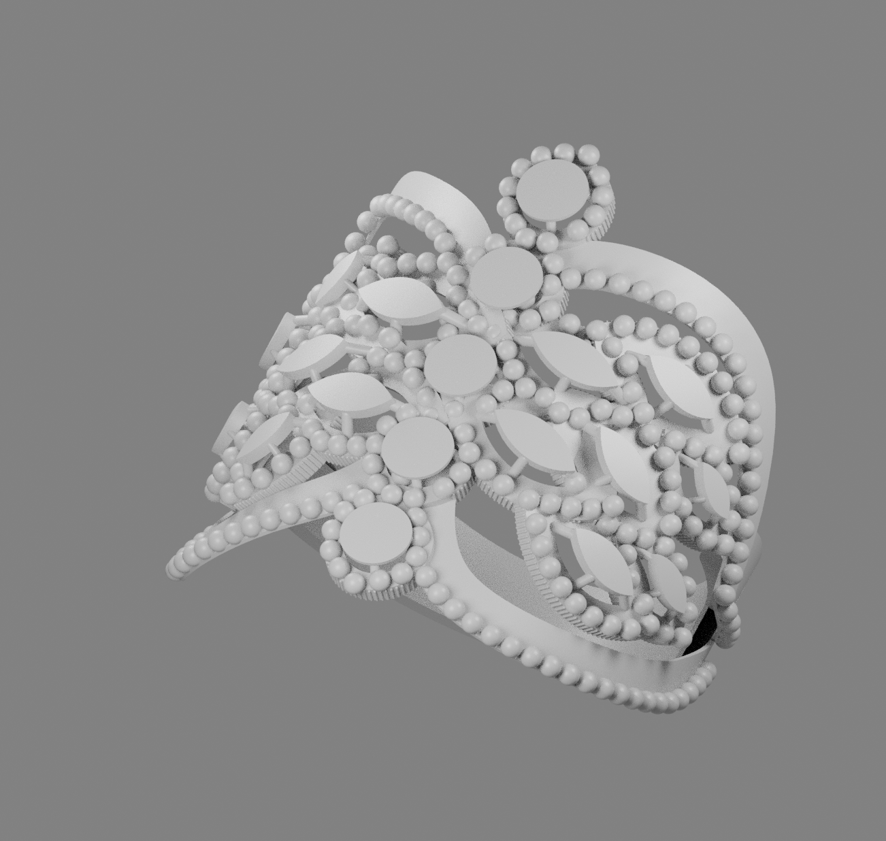

01Download native 3DM ZIP ↓
Opposed wings and five-round spine
1,426 native BREP solids · 285 spherical 1 mm beads


25 mm including beads → 4 mm lower band · EU 62 · 0.2 mm nominal hollow panels
Photograph calibration is approximate; requested 1 mm grains are visibly coarser than the reference. See the design notes for measurement coverage and retained construction details.